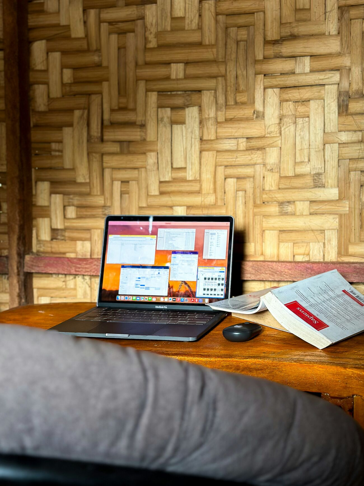

When the classroom went home.
In March 2020, Philippine schools closed and didn't fully reopen for more than two years — among the longest closures on earth. Overnight, an abstract "digital divide" became the single factor deciding whether a child could keep learning.
When learning moved to screens, the country split exactly along the lines the framework predicts — access, skills, and outcomes, all at once.
The Philippines became almost the only country to rely on distance learning for so long, with classes delivered through online platforms and printed self-learning modules. For families on the connected side, it was difficult. For families on the other side, it was often impossible.
A crisis in four acts.
Select a moment to expand it.
The shutdown
A nationwide health emergency closes every campus. With a "no vaccine, no face-to-face" stance, schools stay shut indefinitely and education is pushed entirely onto distance learning.
The scramble for signal
Students climb hills and rooftops hunting for a bar of signal. Provincial data shows fewer than a third have internet at home, and hundreds sit in "off-grid" island schools with no electricity at all.
Modules and money
Where there's no connection, printed modules fill the gap — and teachers spend their own money to print and deliver them. At one university, 1,600 students report no means to join online classes at all.
The learning debt
Schools reopen into a deeper crisis. A system that already ranked last of 79 countries in reading now carries years of widened, unequal learning loss — the outcomes divide, compounded.
The divide, in their own words.
A CNA Insider documentary on how inequality — including unequal access to education and technology — shapes Filipino lives.
CNA Insider documentary. Turn on captions with the player's CC button. If the embed is blocked, watch it on YouTube.
All three levels, at once.
The pandemic didn't create the divide. It removed every cushion that used to hide it.
No signal, no school
Where coverage and data costs already excluded families, remote learning was simply unavailable. Of one nationwide student survey, 22% had no reliable internet.
Online ≠ able
Students and teachers alike had to learn unfamiliar platforms overnight. Limited digital literacy turned "attending" class into a daily struggle even where a connection existed.
Inequality, compounded
Affluent students kept advancing; disadvantaged students fell further behind, deepening a learning gap that long predates the pandemic.
When the internet won't come, bring the lesson to them.
Not every answer waited on policy. Volunteer educators built a "Library-in-a-Box" — a small micro-server loaded onto a microSD card that serves open educational resources, like science and maths videos, over a local network with no internet connection required.
This is digital media used for social good: not raising engagement, but advancing equity — the field's idea of social responsibility and advocacy made concrete. DigiSkills PH stands in exactly this lineage. Where the Library-in-a-Box carried lessons on a chip, DigiSkills PH carries them on the phone already in a child's hand — offline-first, by design, for the same reason: if the signal can't reach the island, the learning still can.

A divide you can ignore in good times becomes a catastrophe the moment everyone is forced online at once.
The remote-learning crisis is the clearest evidence this project offers: connectivity is not a luxury layered on top of education, health, and work — it is the ground they now stand on. Where that ground is missing, opportunity collapses. DigiSkills PH is one attempt to lay a little of it back down.